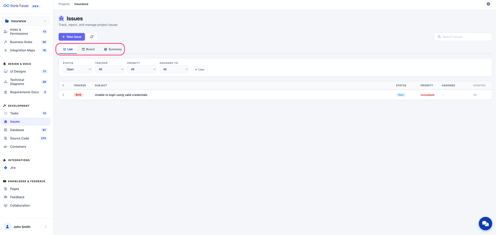
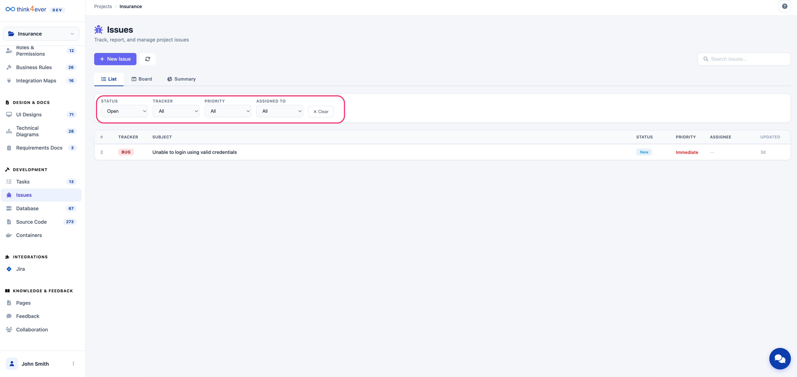
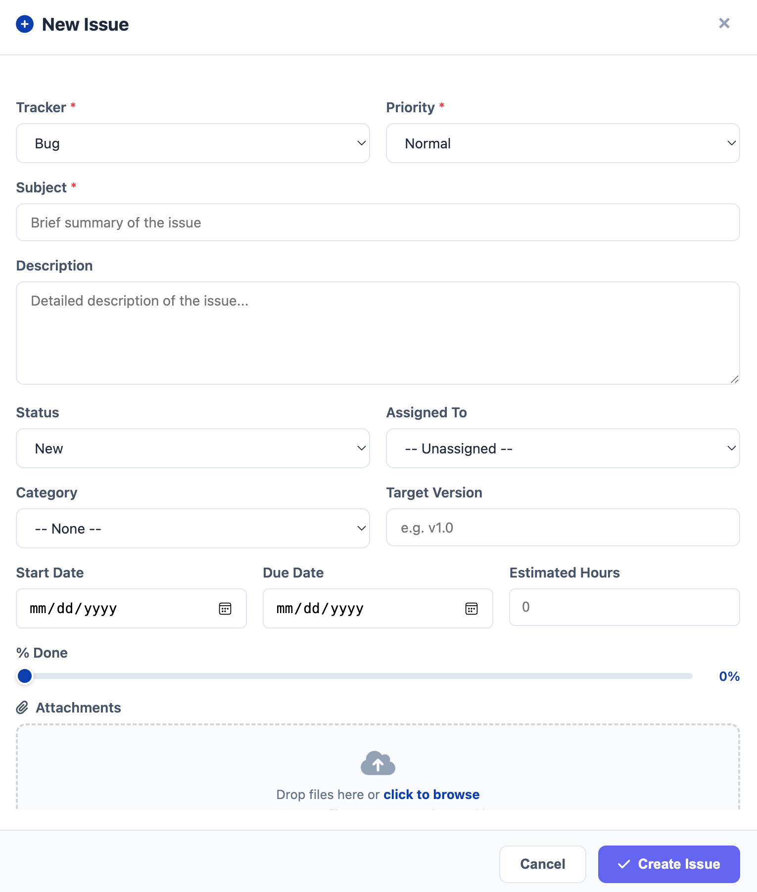
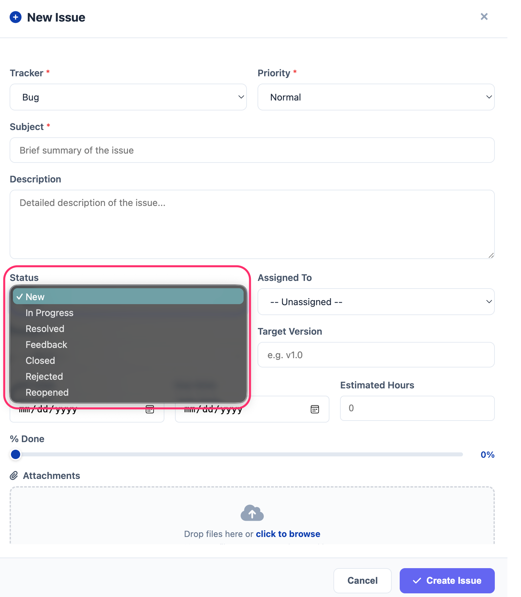

Issues
The Issues module is a comprehensive tracking system designed to help you identify, report, and resolve bugs, tasks, and feature enhancements throughout the project lifecycle.
Issues Dashboard Overview
The main interface allows you to toggle between three distinct views to monitor your project's health:
- List View: A tabular format for quick scanning of all entries, providing key details like Tracker type, Subject, Status, and Priority.
- Board View: A Kanban-style layout for visual workflow management (e.g., New → In Progress → Resolved).

Filtering and Searching
To locate specific issues within a large project, use the global search bar or the quick-filters:
- Status: Filter by Open, Closed, or All issues.
- Tracker: View specific types (e.g., only Bugs or only Features).
- Priority: Focus on critical items by filtering for "Immediate" or "Urgent" tasks.
- Assigned To: View tasks assigned to specific team members.

Reporting a New Issue
To log a new entry, click the + New Issue button. Fill out the following mandatory and optional fields:
| Field | Description |
|---|---|
| Tracker | Categorize the entry (Bug, Feature, Task, Support, or Improvement). |
| Priority | Set the urgency level from Low to Immediate. |
| Subject | A short, descriptive title of the issue. |
| Description | Detailed information, including "Steps to Replicate" for bugs. |
| Assigned To | Select the team member responsible for the task. |
| Target Version | Link the issue to a specific software release (e.g., v1.0). |

The Status field is used to track the lifecycle of an issue from discovery to resolution. Based on the dropdown menu in the "New Issue" modal, here are the available status options:
- New: The initial state of an issue upon creation; it is awaiting review or triaging.
- In Progress: Work has officially started. The assigned developer or team member is actively addressing the issue.
- Resolved: The fix has been implemented or the task completed. It is usually ready for Quality Assurance (QA) testing.
- Feedback: The issue requires more information from the reporter, or the fix was tested and needs further refinement.
- Closed: The issue has been verified as fixed or completed and requires no further action.
- Rejected: The issue was determined to be invalid, a duplicate, or "working as intended."
- Reopened: A previously closed or resolved issue that has recurred or was not fixed successfully.
